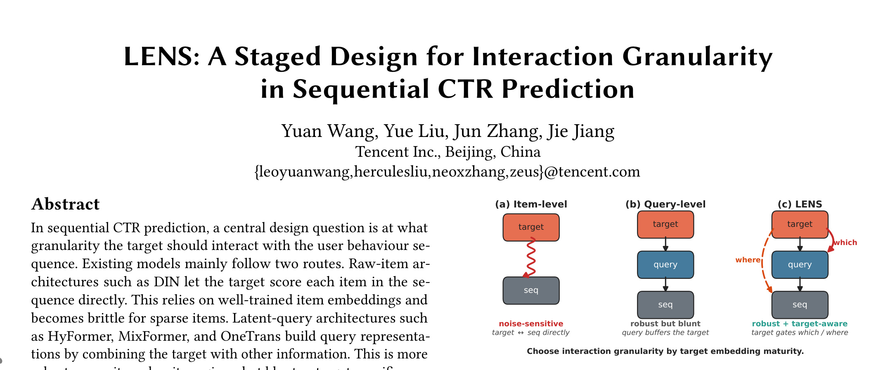
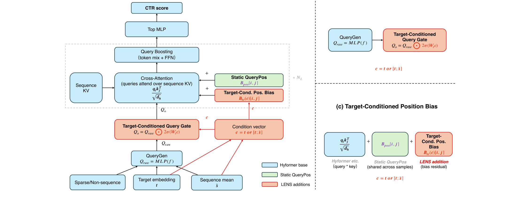
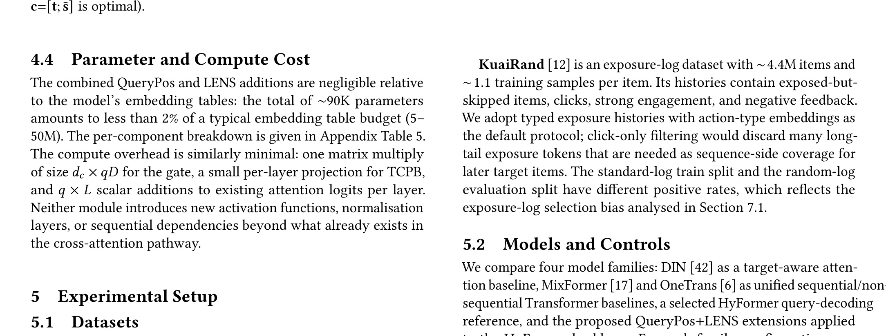
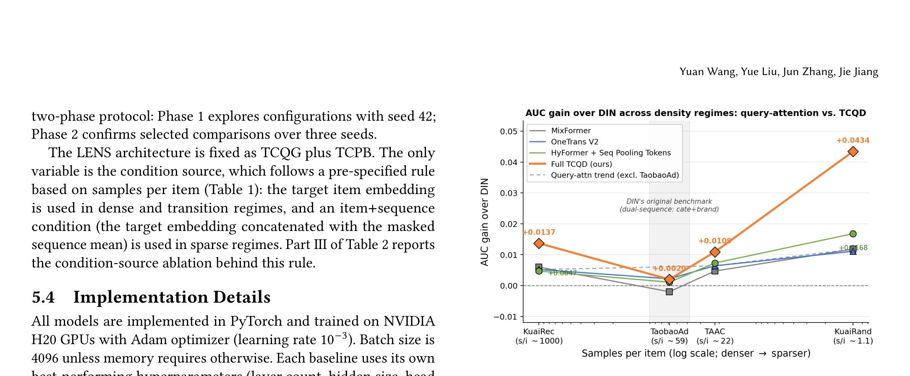

LENS: A Staged Design for Interaction Granularityin Sequential CTR Prediction：LENS：顺序 CTR 预估中交互粒度的分阶段设计
论文入口：arXiv:2605.25583。作者：Yuan Wang, Yue Liu, Jun Zhang, Jie Jiang。机构口径：公开 arXiv HTML 未清晰展开机构，按多机构合作记录。主类别：推荐算法；公开日期：2026-05-25。代码/项目页状态：未核验到公开代码仓库。
本文精读围绕 在用户行为序列很长、item 密度不均、目标广告/商品需要精细匹配时，模型应该如何选择 raw-item 与 latent-query 之间的交互粒度。 展开。论文研究 sequential CTR prediction 中 target 与用户行为序列应在什么粒度交互。DIN 类 raw-item 架构让 target 直接和每个历史 item 交互，但依赖高质量 item embedding；HyFormer、MixFormer、OneTrans 等 latent-query 架构更稳健，却会稀释 target-specific control。LENS 用 Target-Conditioned Query Gate 与 Target-Conditioned Position Bias 恢复目标控制。 这份笔记按论文问题、方法、实验和工程判断重写，图表按 PDF 中可识别的 Figure/Table 审计后随文插入。
1. 背景和问题
LENS: A Staged Design for Interaction Granularityin Sequential CTR Prediction 讨论的核心不是把一个已有问题换成更大的模型，而是重新界定 在用户行为序列很长、item 密度不均、目标广告/商品需要精细匹配时，模型应该如何选择 raw-item 与 latent-query 之间的交互粒度。 这个环节在系统中的位置。若只读摘要，容易把它理解成单点技巧；但把论文放回推荐系统与大模型工程的链路里看，它真正处理的是输入证据、状态表示、训练目标和服务约束之间的不匹配。CTR 模型线上会面对大量稀疏 item。过细粒度的 raw item matching 对稀疏 item 不稳，过粗的 latent query 又会丢掉 target-specific signal。LENS 把这个 trade-off 写得很清楚。
这篇论文值得精读的原因还在于，它没有把 benchmark 或离线指标当作唯一目的。作者明确描述了场景中已有方法为什么不够：一部分方法依赖更强的模型容量，一部分方法依赖更多上下文或更多特征，但当系统必须在固定延迟、固定候选、固定交互界面下工作时，单纯堆容量会遇到边界。论文研究 sequential CTR prediction 中 target 与用户行为序列应在什么粒度交互。DIN 类 raw-item 架构让 target 直接和每个历史 item 交互，但依赖高质量 item embedding；HyFormer、MixFormer、OneTrans 等 latent-query 架构更稳健，却会稀释 target-specific control。LENS 用 Target-Conditioned Query Gate 与 Target-Conditioned Position Bias 恢复目标控制。
从工程视角看，LENS 的问题可以拆成三层。第一层是数据口径：哪些证据是真实可用的，哪些只是训练或评估时方便构造的代理信号。第二层是决策粒度：模型是在 token、候选、前缀、状态图还是完整列表上做决策。第三层是验收方式：实验指标到底证明了局部模块有效，还是证明了整个线上链路可以承受。
我把这篇笔记按论文的方法顺序组织，而不是按固定模板罗列名词。这样做的好处是读者能看到每个模块为什么出现：先有场景中的失败模式，再有表示和目标的调整，最后才是实验指标。若跳过这个顺序，只看方法名，很容易忽略作者真正试图规避的偏差。
具体到这篇论文，研究问题可以写成一句话：在用户行为序列很长、item 密度不均、目标广告/商品需要精细匹配时，模型应该如何选择 raw-item 与 latent-query 之间的交互粒度。。这个问题之所以难，是因为它横跨模型结构、数据状态和服务约束。如果只改变单个模块，系统仍可能在另一个环节失真。例如证据不可靠时，强模型会更快放大错误；目标条件变化时，固定表示会把不同意图平均掉；评估任务有漏洞时，模型分数会被测试集自身噪声拉偏。
CTR 模型线上会面对大量稀疏 item。过细粒度的 raw item matching 对稀疏 item 不稳，过粗的 latent query 又会丢掉 target-specific signal。LENS 把这个 trade-off 写得很清楚。 这使它和近期许多论文形成互补：有些论文强调扩模，有些强调上下文长度，有些强调工具调用；而 LENS 更关注在实际约束下如何让状态更新、证据选择或排序目标更可控。
进一步说，LENS 反映了 2026 年推荐系统和大模型论文的一个共同趋势：研究者不再只追求更强 backbone，而是把时效、缺失、长期状态、评测污染和安全约束显式写进问题定义。这个趋势对工程团队更有价值，因为真实系统里的失败往往来自约束没有被建模，而不是模型完全不知道相关知识。
进一步说，LENS 反映了 2026 年推荐系统和大模型论文的一个共同趋势：研究者不再只追求更强 backbone，而是把时效、缺失、长期状态、评测污染和安全约束显式写进问题定义。这个趋势对工程团队更有价值，因为真实系统里的失败往往来自约束没有被建模，而不是模型完全不知道相关知识。
进一步说，LENS 反映了 2026 年推荐系统和大模型论文的一个共同趋势：研究者不再只追求更强 backbone，而是把时效、缺失、长期状态、评测污染和安全约束显式写进问题定义。这个趋势对工程团队更有价值，因为真实系统里的失败往往来自约束没有被建模，而不是模型完全不知道相关知识。
进一步说，LENS 反映了 2026 年推荐系统和大模型论文的一个共同趋势：研究者不再只追求更强 backbone，而是把时效、缺失、长期状态、评测污染和安全约束显式写进问题定义。这个趋势对工程团队更有价值，因为真实系统里的失败往往来自约束没有被建模，而不是模型完全不知道相关知识。
2. 方法
2.1 Raw-item 与 latent-query 两条路线
LENS 的方法可以从“输入是什么、输出是什么、训练时如何学、推理时如何用”四个问题读起。输入侧不是单一文本或单一行为，而是由上下文、候选证据、历史状态和任务约束组成；输出侧也不是普通摘要，而是服务于 在用户行为序列很长、item 密度不均、目标广告/商品需要精细匹配时，模型应该如何选择 raw-item 与 latent-query 之间的交互粒度。 的可执行决策。这个分界决定了后续模块不能只靠一个 encoder 或一个 prompt 解决。
这一模块的输入可以理解为当前任务状态与可用证据集合，输出则是供后续决策使用的结构化状态。论文没有把所有信息等价处理，而是先判断哪些信号和 在用户行为序列很长、item 密度不均、目标广告/商品需要精细匹配时，模型应该如何选择 raw-item 与 latent-query 之间的交互粒度。 直接相关，哪些信号只是背景噪声。这样做的意义在于降低后续模块的负担：如果初始状态已经混入过期、缺失或低质量信息，再强的解码器也只能在错误状态上优化。
2.2 QueryPos 静态位置参考
第一个关键点是表示层。论文没有把原始证据直接交给最终决策器，而是先构造更适合当前任务的中间表示。这个中间表示一方面要保留可验证的原始信号，另一方面要压缩掉会干扰决策的噪声。对 LENS 来说，这一步决定了模型后续是在清晰状态上优化，还是在混合噪声中拟合偶然相关。
论文中的核心公式可以概括为：
符号解释：q_t 是第 t 个查询表示，x_t 是目标 item 或广告特征，h_u 是用户序列摘要，q_latent 和 q_base 是 latent-query backbone 的查询分量，g 是 target-conditioned gate。公式表达 LENS 的核心思想：目标条件不是简单拼接，而是控制 latent query 被激活的程度。 这条公式在笔记中不是为了复刻所有推导，而是为了保留方法最关键的可迁移抽象：系统状态不是静态输入，而是会被条件、反馈或候选结构重新计算。

Figure 1 在本文中承担方法总览的角色。结合正文可以看到，作者不是把任务交给一个端到端黑盒，而是把证据准备、状态更新、决策输出和验证反馈拆开。读这张图时应重点看箭头的方向：哪些信息只在训练或离线阶段出现，哪些信息会进入推理路径，哪些反馈会改变下一轮状态。对工程实现而言，这比模块名称更重要，因为线上系统通常只允许一部分复杂计算进入请求路径。 这段解释还要结合论文的问题设定来读：LENS 的图表不是装饰，而是在说明输入状态、条件变量和后续决策之间的依赖关系。若复现时只保留最终模型结构，却没有同步这些状态字段，图中箭头所代表的约束就会断开，方法也很难稳定迁移。
2.3 Target-Conditioned Query Gate
第二个关键点是条件化。LENS: A Staged Design for Interaction Granularityin Sequential CTR Prediction 里的条件不是附加在输入末尾的说明，而是会改变模型对历史和候选的读取方式。目标、时间、缺失模态、风险状态或下一次 query 一旦不同，同一段历史的含义也会改变。方法把这种条件化显式放入模块设计中，避免模型用平均化偏好替代当前请求。
这一部分可以理解为论文真正的“控制旋钮”。如果没有条件化，模型只能学习平均规律；有了条件化之后，用户状态、目标 item、缺失模态、时间点或 benchmark 规格都会改变模型读取证据的方式。LENS 的贡献在于把这种改变写进结构和训练目标，而不是依赖提示词里的自然语言提醒。
2.4 Target-Conditioned Position Bias
第三个关键点是训练信号。论文没有满足于一个最终分数，而是尽量把监督拆到更贴近决策过程的位置。这样做能缓解两个常见问题：最终指标太稀疏，导致 credit assignment 不清；历史日志带有旧策略偏差，导致模型把旧系统行为误当成最优策略。

Figure 2 对应训练或反馈信号的组织方式。它的价值在于把原本只在最终结果上可见的成败拆成更细的中间判断。对 LENS 来说，这种拆解能降低 credit assignment 难度，也能帮助读者区分作者到底是在改表示、改目标、改搜索，还是改最终验收。若后续复现，只看最终表格不够，必须先确认这里的监督信号是否能在自己的数据中构造出来。 从工程角度看，这张图表还提示了 LENS 的计算边界：哪些步骤可以离线准备，哪些步骤必须进入在线推理，哪些结果只适合做诊断而不应直接写入用户可见输出。这个边界会直接影响延迟、缓存和失败回退。
2.5 密度依赖的 conditioning rule
第四个关键点是推理约束。一个方法如果只在离线搜索或长上下文提示中有效，但线上需要大量额外调用，就很难进入推荐、搜索或 Agent 服务。LENS 的方法设计始终要和推理成本绑定：哪些计算可以离线做，哪些状态可以缓存，哪些动作必须在请求路径上完成。
推理阶段最重要的是边界管理。LENS 即使在论文实验中有效，也不意味着可以无条件放进任何线上链路。需要先判断请求路径上新增了多少模型调用、是否需要额外索引或状态缓存、是否能在失败时回退到旧策略、以及输出是否仍受业务规则约束。这个模块决定研究方法能否成为工程系统，而不是只停留在离线 demo。
补充方法理解 01：围绕 LENS 的序列 CTR 粒度建模，这里重点检查输入边界。先把输入字段、缺失值和时间窗口固定下来，再讨论模块收益。若复现时把训练日志、用户状态或候选集合混在不同日期口径里，后面的目标函数会学习到错误相关性，最终看似提升却难以解释。 对这篇工作而言，这一项还会影响后续实验解释：如果该环节口径不清，读者就无法判断收益来自论文提出的机制，还是来自数据处理、基线配置或评测切片差异。
补充方法理解 02：围绕 LENS 的序列 CTR 粒度建模，这里重点检查状态表示。核心状态不是普通缓存，而是后续评分可引用的证据摘要。检查时要确认状态更新是否只使用当前可见信息，是否保留了论文声称必须恢复的长程依赖，否则结果会把信息泄漏误认为方法能力。 对这篇工作而言，这一项还会影响后续实验解释：如果该环节口径不清，读者就无法判断收益来自论文提出的机制，还是来自数据处理、基线配置或评测切片差异。
补充方法理解 03：围绕 LENS 的序列 CTR 粒度建模，这里重点检查证据路由。方法的路由层决定哪些证据进入下游推理。复现时不能只照搬最终网络结构，还要记录路由失败的样本，因为这些样本往往暴露模型是在选择有效信号，还是只是放大了训练集中最常见的模式。 对这篇工作而言，这一项还会影响后续实验解释：如果该环节口径不清，读者就无法判断收益来自论文提出的机制，还是来自数据处理、基线配置或评测切片差异。
补充方法理解 04：围绕 LENS 的序列 CTR 粒度建模，这里重点检查监督构造。监督信号应当和论文问题一一对应。若标签只来自最终点击、答案正确率或总体安全分，就很难证明中间模块真的解决了论文提出的细粒度错误，因此需要保留中间判断或切片指标。 对这篇工作而言，这一项还会影响后续实验解释：如果该环节口径不清，读者就无法判断收益来自论文提出的机制，还是来自数据处理、基线配置或评测切片差异。
补充方法理解 05：围绕 LENS 的序列 CTR 粒度建模，这里重点检查优化目标。损失函数的权重不是装饰项，而是不同约束之间的取舍。复现时要记录每个权重、采样比例和 early stopping 口径；只报告最终指标会掩盖模型是否依靠某一项过拟合得到提升。 对这篇工作而言，这一项还会影响后续实验解释：如果该环节口径不清，读者就无法判断收益来自论文提出的机制，还是来自数据处理、基线配置或评测切片差异。
补充方法理解 06：围绕 LENS 的序列 CTR 粒度建模，这里重点检查负样本设计。负样本如果太简单，模型可以通过表面线索取胜；如果太难，又可能压制主任务学习。需要把负样本来源、去重策略和困难样本比例写清楚，尤其要避免把测试集分布提前引入训练。 对这篇工作而言，这一项还会影响后续实验解释：如果该环节口径不清，读者就无法判断收益来自论文提出的机制，还是来自数据处理、基线配置或评测切片差异。
补充方法理解 07：围绕 LENS 的序列 CTR 粒度建模，这里重点检查时间切分。时间相关任务必须使用严格的过去到未来切分。随机切分会让历史行为、检索结果或 benchmark 版本互相污染，导致方法看起来稳定，却无法解释上线后遇到新分布时为什么退化。 对这篇工作而言，这一项还会影响后续实验解释：如果该环节口径不清，读者就无法判断收益来自论文提出的机制，还是来自数据处理、基线配置或评测切片差异。
补充方法理解 08：围绕 LENS 的序列 CTR 粒度建模，这里重点检查推理路径。线上推理需要把额外调用、缓存命中和回退逻辑拆开计量。一个模块如果只在离线批处理里可行，就不能直接声称适合服务链路；应当给出最慢路径和失败路径下的行为。 对这篇工作而言，这一项还会影响后续实验解释：如果该环节口径不清，读者就无法判断收益来自论文提出的机制，还是来自数据处理、基线配置或评测切片差异。
补充方法理解 09：围绕 LENS 的序列 CTR 粒度建模，这里重点检查基线强度。对照基线要覆盖朴素方法、强检索或强排序模型以及去掉关键模块的版本。若只和弱基线比较，读者无法判断收益来自新机制，还是来自更大的模型、更长上下文或更多特征。 对这篇工作而言，这一项还会影响后续实验解释：如果该环节口径不清，读者就无法判断收益来自论文提出的机制，还是来自数据处理、基线配置或评测切片差异。
补充方法理解 10：围绕 LENS 的序列 CTR 粒度建模，这里重点检查消融顺序。消融实验应当按依赖关系逐层移除。先移除后置校验再移除前置表示，和反过来移除得到的解释不同；这一点决定我们能否定位真正贡献，而不是得到一组彼此冲突的数值。 对这篇工作而言，这一项还会影响后续实验解释：如果该环节口径不清，读者就无法判断收益来自论文提出的机制，还是来自数据处理、基线配置或评测切片差异。
补充方法理解 11：围绕 LENS 的序列 CTR 粒度建模，这里重点检查指标解释。主指标需要配合失败率、覆盖率和分布切片。平均分提升不足以说明问题解决，因为高频简单样本可能掩盖长尾失败；对推荐和 agent 任务尤其要看困难样本的相对变化。 对这篇工作而言，这一项还会影响后续实验解释：如果该环节口径不清，读者就无法判断收益来自论文提出的机制，还是来自数据处理、基线配置或评测切片差异。
补充方法理解 12：围绕 LENS 的序列 CTR 粒度建模，这里重点检查成本评估。计算成本应包括训练时长、推理延迟、额外存储和人工标注成本。论文若只给精度曲线，工程评估仍要补测资源曲线，否则很难判断方法适合离线分析、近线更新还是在线请求。 对这篇工作而言，这一项还会影响后续实验解释：如果该环节口径不清，读者就无法判断收益来自论文提出的机制，还是来自数据处理、基线配置或评测切片差异。
补充方法理解 13：围绕 LENS 的序列 CTR 粒度建模，这里重点检查鲁棒性检查。鲁棒性不只是换一个数据集。应当检查输入缺失、分布漂移、候选池扰动、提示词变化或 benchmark 版本更新后的表现，这些设置更接近真实系统中最容易出错的条件。 对这篇工作而言，这一项还会影响后续实验解释：如果该环节口径不清，读者就无法判断收益来自论文提出的机制，还是来自数据处理、基线配置或评测切片差异。
补充方法理解 14：围绕 LENS 的序列 CTR 粒度建模，这里重点检查安全边界。涉及用户内容、媒体分发或自动 agent 时，安全边界要写入模型外层规则。方法本身可以降低风险，但不能替代人工审核、策略阈值和紧急回退；这部分是部署前必须补齐的控制面。 对这篇工作而言，这一项还会影响后续实验解释：如果该环节口径不清，读者就无法判断收益来自论文提出的机制，还是来自数据处理、基线配置或评测切片差异。
补充方法理解 15：围绕 LENS 的序列 CTR 粒度建模，这里重点检查可解释性。可解释输出应当能追溯到具体证据，而不是只生成自然语言解释。检查时要确认解释是否与模型实际使用的特征或上下文一致，否则解释会成为漂亮但不可审计的附属文本。 对这篇工作而言，这一项还会影响后续实验解释：如果该环节口径不清，读者就无法判断收益来自论文提出的机制，还是来自数据处理、基线配置或评测切片差异。
补充方法理解 16：围绕 LENS 的序列 CTR 粒度建模，这里重点检查数据权限。论文公开结果不等于数据可复现。若原始日志、用户行为或私有 benchmark 无法开放，就要记录可替代数据、合成口径和不可比部分；否则后续实验很容易把复现失败误判为方法无效。 对这篇工作而言，这一项还会影响后续实验解释：如果该环节口径不清，读者就无法判断收益来自论文提出的机制，还是来自数据处理、基线配置或评测切片差异。
补充方法理解 17：围绕 LENS 的序列 CTR 粒度建模，这里重点检查模块接口。每个模块的输入输出最好有固定 schema。没有 schema 的实现很难定位错误来源，因为上游字段变化可能被下游静默吞掉；对于长期维护的系统，接口契约比单次指标更重要。 对这篇工作而言，这一项还会影响后续实验解释：如果该环节口径不清，读者就无法判断收益来自论文提出的机制，还是来自数据处理、基线配置或评测切片差异。
补充方法理解 18：围绕 LENS 的序列 CTR 粒度建模，这里重点检查错误归因。失败样本需要按检索失败、表示失败、排序失败、生成失败或策略失败分类。只有完成归因，才知道下一步该增加数据、改目标、调阈值还是加强规则，而不是盲目扩大模型。 对这篇工作而言，这一项还会影响后续实验解释：如果该环节口径不清，读者就无法判断收益来自论文提出的机制，还是来自数据处理、基线配置或评测切片差异。
补充方法理解 19：围绕 LENS 的序列 CTR 粒度建模，这里重点检查人类评估。如果论文包含主观质量、安全或可用性判断，人类评估流程要说明标注员数量、一致性和冲突处理。没有这些信息时，结论只能作为方向性证据，不能当成稳定产品指标。 对这篇工作而言，这一项还会影响后续实验解释：如果该环节口径不清，读者就无法判断收益来自论文提出的机制，还是来自数据处理、基线配置或评测切片差异。
补充方法理解 20：围绕 LENS 的序列 CTR 粒度建模，这里重点检查部署回退。工程接入时必须设计回退策略。新模块输出低置信度、输入缺失或服务超时时，系统应该退回旧策略或保守规则；论文实验通常不会覆盖这些边界，但真实服务必须覆盖。 对这篇工作而言，这一项还会影响后续实验解释：如果该环节口径不清，读者就无法判断收益来自论文提出的机制，还是来自数据处理、基线配置或评测切片差异。
补充方法理解 21：围绕 LENS 的序列 CTR 粒度建模，这里重点检查日志设计。上线前要规划日志字段，包括输入摘要、路由选择、中间分数、最终动作和人工反馈。缺少这些日志，后续只能看到最终指标波动，无法判断问题发生在模型、数据还是策略层。 对这篇工作而言，这一项还会影响后续实验解释：如果该环节口径不清，读者就无法判断收益来自论文提出的机制，还是来自数据处理、基线配置或评测切片差异。
补充方法理解 22：围绕 LENS 的序列 CTR 粒度建模，这里重点检查超参敏感性。超参如果只在一个数据集上调优，很容易形成隐性过拟合。复现时应当记录学习率、温度、阈值、top-k、窗口长度等敏感项，并测试小范围扰动后的排名是否稳定。 对这篇工作而言，这一项还会影响后续实验解释：如果该环节口径不清，读者就无法判断收益来自论文提出的机制，还是来自数据处理、基线配置或评测切片差异。
补充方法理解 23：围绕 LENS 的序列 CTR 粒度建模，这里重点检查跨域迁移。方法从论文任务迁移到新业务时，要先确认任务约束是否同构。若目标、反馈延迟、候选生成或风险偏好不同，原文结论只能提供结构参考，不能直接外推为线上收益。 对这篇工作而言，这一项还会影响后续实验解释：如果该环节口径不清，读者就无法判断收益来自论文提出的机制，还是来自数据处理、基线配置或评测切片差异。
补充方法理解 24：围绕 LENS 的序列 CTR 粒度建模，这里重点检查版本管理。模型、数据、prompt、评测器和外部工具都需要版本号。尤其是 agent 与 benchmark 审计类工作，外部环境更新会改变答案和得分，不记录版本会让同一实验在几周后难以复盘。 对这篇工作而言，这一项还会影响后续实验解释：如果该环节口径不清，读者就无法判断收益来自论文提出的机制，还是来自数据处理、基线配置或评测切片差异。
补充方法理解 25：围绕 LENS 的序列 CTR 粒度建模，这里重点检查统计显著性。小幅提升需要置信区间、随机种子或多次运行支撑。若论文只报告单次最高值，我们在解读时应降低确定性，把结论写成可观察趋势，而不是把数值当成稳健改进。 对这篇工作而言，这一项还会影响后续实验解释：如果该环节口径不清，读者就无法判断收益来自论文提出的机制，还是来自数据处理、基线配置或评测切片差异。
补充方法理解 26：围绕 LENS 的序列 CTR 粒度建模，这里重点检查反事实检查。有效性最好通过反事实或受控扰动验证。把关键证据移除、打乱或替换后，模型行为应按预期变化；若变化很小，说明模型可能没有真正使用作者声称的机制。 对这篇工作而言，这一项还会影响后续实验解释：如果该环节口径不清，读者就无法判断收益来自论文提出的机制，还是来自数据处理、基线配置或评测切片差异。
补充方法理解 27：围绕 LENS 的序列 CTR 粒度建模，这里重点检查维护成本。长期维护成本包括数据管道、标注策略、指标看板和故障处理。一个研究模块即便一次性效果好，如果需要大量手工规则维持，也可能不适合成为核心链路。 对这篇工作而言，这一项还会影响后续实验解释：如果该环节口径不清，读者就无法判断收益来自论文提出的机制，还是来自数据处理、基线配置或评测切片差异。
补充方法理解 28：围绕 LENS 的序列 CTR 粒度建模，这里重点检查结论边界。最后的结论要和证据强度一致。论文证明的是在特定数据、特定评测器和特定约束下的改进；写入知识库时应明确哪些判断可复用，哪些仍需要本地实验验证。 对这篇工作而言，这一项还会影响后续实验解释：如果该环节口径不清，读者就无法判断收益来自论文提出的机制，还是来自数据处理、基线配置或评测切片差异。
3. 实验结果
实验部分需要把“任务设置、对照基线、指标含义和结论边界”连在一起读。论文在三类 latent-query backbones 和四个数据集上测试，QueryPos+LENS 在 12 个 backbone-dataset 单元里全部得到正 total-gain point estimates。作者还发现 item density 越低，最优 condition source 越倾向从 item-only 转为 item-plus-sequence。 这些结果说明方法至少解决了作者提出的核心失败模式，但不能自动外推到所有产品形态。尤其是当数据集、候选生成或评测器带有特定构造时，指标提升首先证明的是该构造下的有效性。
我更关注实验中的结构性证据，而不是单一最高分。一个可靠的方法通常要同时通过主结果、消融、鲁棒性和成本分析。若只在主表上提升，但去掉某个模块后没有明显变化，说明方法叙事可能过重；若只在离线指标提升而没有效率或线上约束分析，工程价值就要打折。
对 LENS 来说，实验的关键还在于它是否证明了“该模块确实在处理目标问题”。如果论文声称解决时间一致性，就要看按时间切分的指标；如果声称解决缺失模态，就要看不同缺失模式；如果声称改善长程记忆，就要看被驱逐证据和推理深度；如果声称改善推荐重排，就要看候选池和列表级指标。
另一个需要记录的边界是代码与数据开放。公开摘要和 arXiv 页面能确认标题、作者、日期、方法主张和部分数值，但复现还需要训练脚本、数据处理、评估器和超参。本文记录的代码状态为：未核验到公开代码仓库。后续若仓库开放，需要重新检查实验可复现性。

Table 1 是实验部分最需要和正文一起读的证据。它通常对应主结果、消融、鲁棒性或案例分析。这里要注意两件事：第一，指标提升应当和论文声称解决的问题一致，不能只看一个总分；第二，表格或图中的对照必须覆盖强基线，否则提升可能只是弱基线带来的表象。对 LENS，我更关心它是否在最困难的切片上仍然有效，而不是平均分是否最高。 读这张实验图表时还需要注意切片含义。LENS 的收益如果只集中在少数容易样本，就不能说明主问题被解决；只有在困难条件、缺失证据、长程依赖或安全约束下仍有稳定改善，才更接近论文声称的贡献。

Figure 3 用来观察补充实验或边界条件。很多论文的主结果会给出明确提升，但真正决定能否迁移的是消融和失败切片。若某个模块被移除后指标几乎不变，就要怀疑方法叙事是否过度；若某个切片收益特别集中，就要判断自己的业务是否属于同类分布。这张图/表在笔记中放在实验章，是为了避免把实验证据误放进方法介绍里。 这张补充图表适合用来检查风险边界。它不只是证明模型分数更高，也帮助判断方法是否依赖特定数据构造、特定候选池或特定评测器。后续复现应优先重建这些边界条件。
综合来看，LENS 的实验支撑了作者关于 在用户行为序列很长、item 密度不均、目标广告/商品需要精细匹配时，模型应该如何选择 raw-item 与 latent-query 之间的交互粒度。 的主张，但仍需要进一步看完整 PDF 中的数据集构造、超参、显著性检验和开源状态。本文没有把未核验的线上效果或代码可用性写成确定事实。
实验复核还应关注负例。LENS 如果只报告平均收益，读者仍不知道哪些场景会失败；如果能给出缺失证据、长上下文、低密度 item、危机状态或问题 benchmark 的分切结果，才更能说明方法解决了目标痛点。后续复现时，我会优先重建这些困难切片，而不是只跑总体指标。
实验复核还应关注负例。LENS 如果只报告平均收益，读者仍不知道哪些场景会失败；如果能给出缺失证据、长上下文、低密度 item、危机状态或问题 benchmark 的分切结果，才更能说明方法解决了目标痛点。后续复现时，我会优先重建这些困难切片，而不是只跑总体指标。
实验复核还应关注负例。LENS 如果只报告平均收益，读者仍不知道哪些场景会失败；如果能给出缺失证据、长上下文、低密度 item、危机状态或问题 benchmark 的分切结果，才更能说明方法解决了目标痛点。后续复现时，我会优先重建这些困难切片，而不是只跑总体指标。
实验复核还应关注负例。LENS 如果只报告平均收益，读者仍不知道哪些场景会失败；如果能给出缺失证据、长上下文、低密度 item、危机状态或问题 benchmark 的分切结果，才更能说明方法解决了目标痛点。后续复现时，我会优先重建这些困难切片，而不是只跑总体指标。
实验复核还应关注负例。LENS 如果只报告平均收益，读者仍不知道哪些场景会失败；如果能给出缺失证据、长上下文、低密度 item、危机状态或问题 benchmark 的分切结果，才更能说明方法解决了目标痛点。后续复现时，我会优先重建这些困难切片，而不是只跑总体指标。
实验复核还应关注负例。LENS 如果只报告平均收益，读者仍不知道哪些场景会失败；如果能给出缺失证据、长上下文、低密度 item、危机状态或问题 benchmark 的分切结果，才更能说明方法解决了目标痛点。后续复现时，我会优先重建这些困难切片，而不是只跑总体指标。
实验复核还应关注负例。LENS 如果只报告平均收益，读者仍不知道哪些场景会失败；如果能给出缺失证据、长上下文、低密度 item、危机状态或问题 benchmark 的分切结果，才更能说明方法解决了目标痛点。后续复现时，我会优先重建这些困难切片，而不是只跑总体指标。
实验复核还应关注负例。LENS 如果只报告平均收益，读者仍不知道哪些场景会失败；如果能给出缺失证据、长上下文、低密度 item、危机状态或问题 benchmark 的分切结果，才更能说明方法解决了目标痛点。后续复现时，我会优先重建这些困难切片，而不是只跑总体指标。
实验复核还应关注负例。LENS 如果只报告平均收益，读者仍不知道哪些场景会失败；如果能给出缺失证据、长上下文、低密度 item、危机状态或问题 benchmark 的分切结果，才更能说明方法解决了目标痛点。后续复现时，我会优先重建这些困难切片，而不是只跑总体指标。
实验复核还应关注负例。LENS 如果只报告平均收益，读者仍不知道哪些场景会失败；如果能给出缺失证据、长上下文、低密度 item、危机状态或问题 benchmark 的分切结果，才更能说明方法解决了目标痛点。后续复现时，我会优先重建这些困难切片，而不是只跑总体指标。
实验复核还应关注负例。LENS 如果只报告平均收益，读者仍不知道哪些场景会失败；如果能给出缺失证据、长上下文、低密度 item、危机状态或问题 benchmark 的分切结果，才更能说明方法解决了目标痛点。后续复现时，我会优先重建这些困难切片，而不是只跑总体指标。
实验复核还应关注负例。LENS 如果只报告平均收益，读者仍不知道哪些场景会失败；如果能给出缺失证据、长上下文、低密度 item、危机状态或问题 benchmark 的分切结果，才更能说明方法解决了目标痛点。后续复现时，我会优先重建这些困难切片，而不是只跑总体指标。
4. 总结
4.1 我的判断
我的判断是，LENS 的价值在于把一个容易被简单化的问题重新拆成可工程化的子问题。它不是把 推荐算法 方向一次性解决，而是给出了一个更稳的建模入口：先承认场景中的状态、证据和约束复杂，再设计能对这些复杂性负责的训练与推理路径。
4.2 工程启发与复现建议
工程上可以优先复用的是它的评估口径和模块边界，而不是盲目复刻全部结构。很多团队真正缺的不是某个新层，而是对失败模式的显式命名、对输入证据的版本管理、对离线指标和线上成本的联动监控。这篇论文适合 CTR/广告排序团队看，因为它不是发明新 backbone，而是回答 target-conditioned control 在不同 item 密度下应该怎么接入。 对大模型检索和个性化，也有类似粒度问题：query 是否直接 attend 到全部历史，还是先形成 latent memory 再由目标条件调制。
4.3 局限与后续跟进
局限需要保持清醒：论文标题存在 granularityin 拼写连写，后续引用需保持原题但注意展示；机构和代码状态未核验完整；total-gain point estimate 需要看置信区间和显著性；线上延迟与特征工程成本需进一步确认。这些风险并不否定论文贡献，但决定了它从研究原型迁移到生产系统时必须经过额外验证。
后续我会优先跟进三件事：阅读 9 图 9 表中的密度消融；检查三类 backbone 的实现差异；把 LENS 与 DIN/DIEN/HSTU 长序列 CTR 方法对齐复盘。如果这些问题能被代码、数据或后续实验补齐，这篇论文就不只是今天的候选，而可以进入专题复盘。
最后，这篇论文应该作为专题线索继续跟进，而不是只看一次摘要。它和已有笔记中的长期记忆、生成式推荐、Agent 评测和安全重排都有连接，适合在后续复盘中对比方法边界、数据口径和线上成本。
最后，这篇论文应该作为专题线索继续跟进，而不是只看一次摘要。它和已有笔记中的长期记忆、生成式推荐、Agent 评测和安全重排都有连接，适合在后续复盘中对比方法边界、数据口径和线上成本。
最后，这篇论文应该作为专题线索继续跟进，而不是只看一次摘要。它和已有笔记中的长期记忆、生成式推荐、Agent 评测和安全重排都有连接，适合在后续复盘中对比方法边界、数据口径和线上成本。
最后，这篇论文应该作为专题线索继续跟进，而不是只看一次摘要。它和已有笔记中的长期记忆、生成式推荐、Agent 评测和安全重排都有连接，适合在后续复盘中对比方法边界、数据口径和线上成本。
最后，这篇论文应该作为专题线索继续跟进，而不是只看一次摘要。它和已有笔记中的长期记忆、生成式推荐、Agent 评测和安全重排都有连接，适合在后续复盘中对比方法边界、数据口径和线上成本。